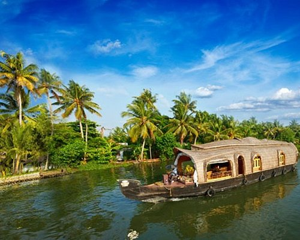

Ambalapuzha sreekrishna temple
Popularly known as the Ambalappuzha Sree Krishna Temple, this is one of the seven great Vaishnava temples in Kerala. This holy shrine is situated in Alappuzha district, and Lord Vishnu the presiding deity appears as here in the guise of Parthasarathy, the charioteer of Arjuna from the epic Mahabharata
Read more

Allapuzha back waters
popular backwater destination, Alleppey in Kerala is visited by thousands of travelers every year. It is a destination for every kind of traveler, be it a nature lover, wildlife enthusiast, photo bug or a wanderer.
Read more